Lecture 18: Factorial ANOVA
Correlation
Pearson Product Moment (PPM) correlation is a standardized covariance:
\[r_{xy} = \frac{s_{xy}}{s_x s_y} = \frac{\sum_{i=1}^N(x_i - \bar{x})(y_i - \bar{y})}{\sqrt{\sum_{i=1}^N(x_i - \bar{x})^2}\sqrt{\sum_{i=1}^N(y_i - \bar{y})^2}}\]
- \(s_{xy}\) is the sample covariance
- \(s_x s_y\) is the product of the sample variances
PPM Correlation
- The PPM is the most common type of correlation
- If not specified, safe to assume that a correlation is a PPM
- Equals the degree to which to variables co-vary in terms of their \(SD\)s
- Scale-free
- Correlations range from -1 to 1
- Correlations of 0 indicate no linear relationship
- The sign of a correlation is the same as the sign of the covariance
Hypothesis Testing
In hypothesis testing, we use sample statistics to estimate population parameters
- \(\bar{x}\) is an estimate of \(\mu\)
- \(s_{x}\) is an estimate of \(\sigma_x\)
- \(r_{xy}\) is an estimate of \(\rho_{xy}\)
- \(\hat{b}_0\) and \(\hat{b}_1\) are estimates of \(b_0\) and \(b_1\)
Null hypotheses we can test include:
- \(H_0\): \(\rho_{xy} = 0\)
- \(H_0\): \(\rho_{xy} = \#\) (specific number other than zero)
- \(H_0\): population \(R^2 = 0\)
- \(H_0\): \(b_1 = 0\)
- \(H_0\): \(b_0 = 0\) (usually not substantively interesting)
Hypothesis Test for \(r_{xy}\)
- \(H_0: \rho_{xy} = 0\)
- \(H_1: \rho_{xy} \neq 0\) (directional tests may also be appropriate)
When \(H_0\) is true, the test statistic follows a \(t\) distribution with \(N-2\) \(df\)
\[t_{\text{obs}}(df) = \frac{r_{xy}\sqrt{N-2}}{\sqrt{1 - r_{xy}^2}}\]
Non-nil \(r_{xy}\)
What if we want to test against a different null hypothesis?
- Sampling distribution is not symmetric if \(\rho_{xy} \neq 0\)
Fisher’s \(r\)-to-\(z\) transformation:
(equal to hyperbolic arctan function)
\[z_{\text{obs}} = \frac{1}{2}\ln\left(\frac{1+r_{xy}}{1-r_{xy}}\right)\]
- \(z_{\text{obs}}\) follows a normal distribution
- Mean = \(\frac{1}{2}\ln\left(\frac{1 + \rho_{xy}}{1-\rho_{xy}}\right)\)
- Standard error = \(\frac{1}{\sqrt{N-3}}\)
- \(\ln()\): natural logarithm function
- \(N\): sample size
Assumes that \(x\) and \(y\) have a bivariate normal distribution
Bivariate Normal \(r_{xy} = 0\)
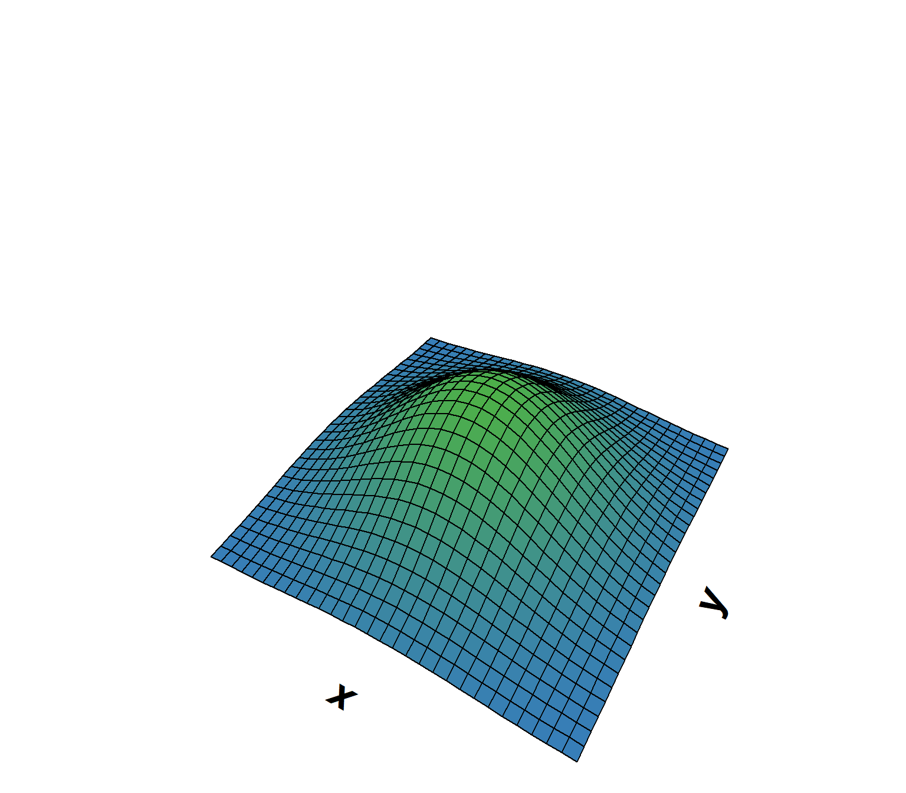
Bivariate Normal \(r_{xy} = .5\)
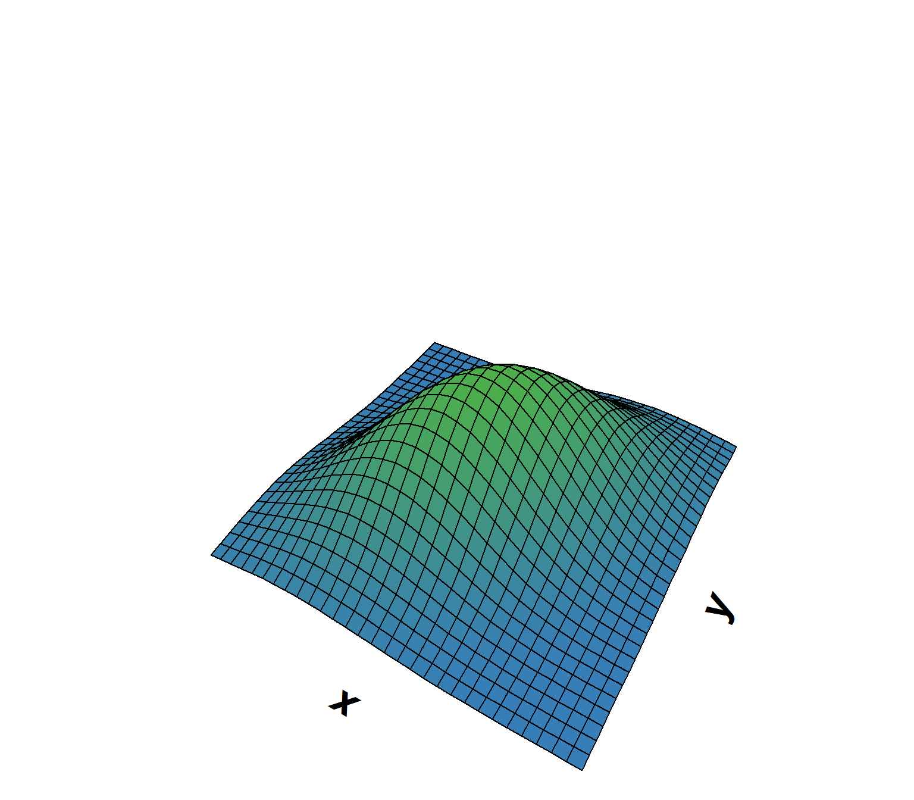
Confidence Interval \(\rho\)
Step 1: calculate the lower and upper limits of \(\frac{1}{2}\ln\left(\frac{1 + \rho_{xy}}{1-\rho_{xy}}\right)\):
- Limits: \(\frac{1}{2}\ln\left(\frac{1+r_{xy}}{1-r_{xy}}\right) \pm z_{\alpha/2}\frac{1}{\sqrt{N-3}}\)
- \(z_{\alpha/2}\): \(\alpha/2\) quantile of the \(z\) distribution (critical value)
Step 2: calculate the lower and upper limits of \(\rho_{xy}\):
- Limits = \(\frac{\exp(2\times \text{ limit }) - 1}{\exp(2\times \text{ limit }) + 1}\)
- \(\exp()\): exponential function (inverse of \(\ln()\))
\(Z\)-Transformation
- Fisher’s \(Z\)-transformation of the correlation is useful any time you want to represent a distribution of correlations
- For hypothesis tests: better represents sampling distribution
- Not necessary if \(H_0: \rho = 0\) because that implies symmetric distribution
- 0 is the midpoint of the range of possible \(\rho\) values
Other Uses
- Also useful if you have a sample of correlations
- Maybe you have a sample of participants who did 50 trials on an experiment, and you want to see the distribution of within-person correlations between response time and score on trial
- Transform observed \(r\)’s to \(Z\)’s
- Calculate mean and SD
- Back-transform descriptive stats from \(Z\) to \(r\)
Example
Original Study:
Pleskac, T. J. (2008). Decision making and learning while taking sequential risks. Journal of Experimental Psychology: Learning, Memory, and Cognition, 34, 167-185.
Replication study link: https://osf.io/3amj4
To what extent is the learning aspect of risk-taking behavior related to risky drug use?
ART = Angling Risk Tasks, computer game to study risk-taking behavior
Game play:
- Subjects decide whether to cast a rod to catch fish in a pond
- If red fish is caught, earn 5 cents and a chance to cast again
- If blue fish is caught, end the round & lose money
- Play 30 rounds per study condition
- Subjects were compensated based on their winnings
Details
Conditions:
- Weather:
- Sunny day (S): subjects can see # of red & blue fish in the pond
- Cloudy day (C): subjects cannot see # each type of fish
- In cloudy day condition, subjects can learn about probabilities
- Type of fishing:
- Catch n’ release (R): probabilities of red and blue fish are constant
- Catch n’ keep (K): probabilities change with successive casts
Each subject was exposed to 30 reps of all 4 combinations of conditions:
- KS, KC, RS, RC
Variables:
- Polydrug: count of the number of risky/illegal drugs ever tried (11 categories), weighted by frequency of use
- ART scores (for each KS, KC, RS, RC): average number of casts taken on trials for which subjects chose to stop fishing (no blue fish)
More Details
Original comparisons of interest:
- Are the correlations between ART scores and polydrug in the sunny conditions greater than the correlations for the cloudy conditions?
Let’s test a simpler hypothesis:
- Are KC scores related to real-life risk-taking behavior (polydrug)?
- Catch n’ keep on a cloudy day
Scatterplot
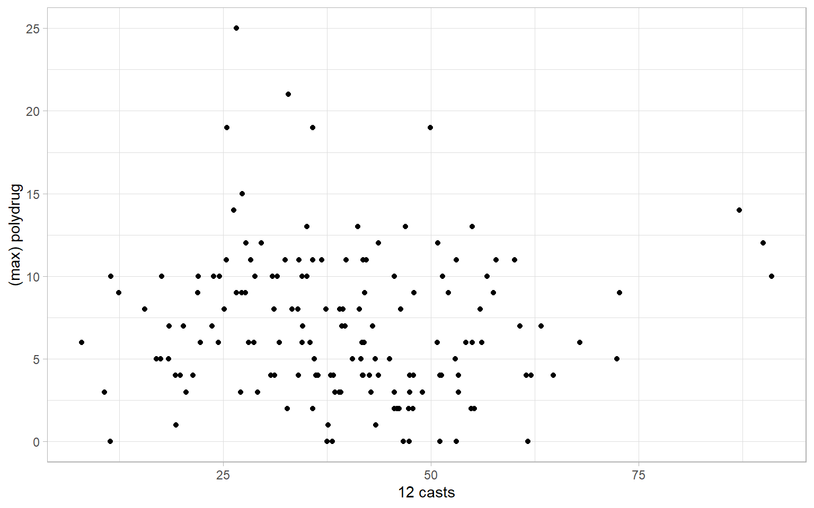
Correlation Test (By hand)
\[t_{\text{obs}}(df) = \frac{r_{xy}\sqrt{N-2}}{\sqrt{1 - r_{xy}^2}}=\]
\[t_{\text{obs}}(153 - 2) = \frac{-0.046\sqrt{153 - 2}}{\sqrt{1 - -0.046^2}} = -0.564\]
Correlation Test (by R)
For Non-nil
How might we use the info we have here to at least think about a non-nil hypothesis?
- Can we use the confidence interval somehow?
- Cannot reject any value inside confidence interval
- Can reject any value outside confidence interval
Scatterplot Lines
When plotting data, it can be useful to add a line of “best fit”. Two common options
- Simple regression line (more on regression next time!)
- Best fitting “straight” line
- LOESS line
- Non-parameteric method line that can help identify non-linearity
- Stands for LOcally Estimated Scatterplot Smoothing
Regression Line

LOESS Line
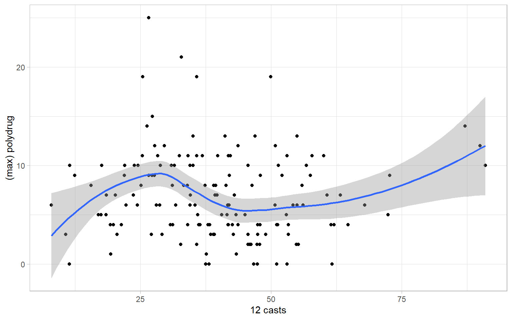
Scatterplot Matrices
- Scatterplots visually represent correlations between two variables
- Scatterplot matrices (SPLOMs) visually represent multiple variables
- Think: visual versions of correlation matrices
- Diagonals: univariate distributions
- Kernel density plots
- Histograms
- Off Diagnonals: Correlations
- Scatterplots
- Numeric correlations
GGally
There are different tools for generating scatterplot matrices. I use GGally::ggpairs(). Let’s create a scatterplot matrix for
polydrugKSKCRSRC
SPLOM
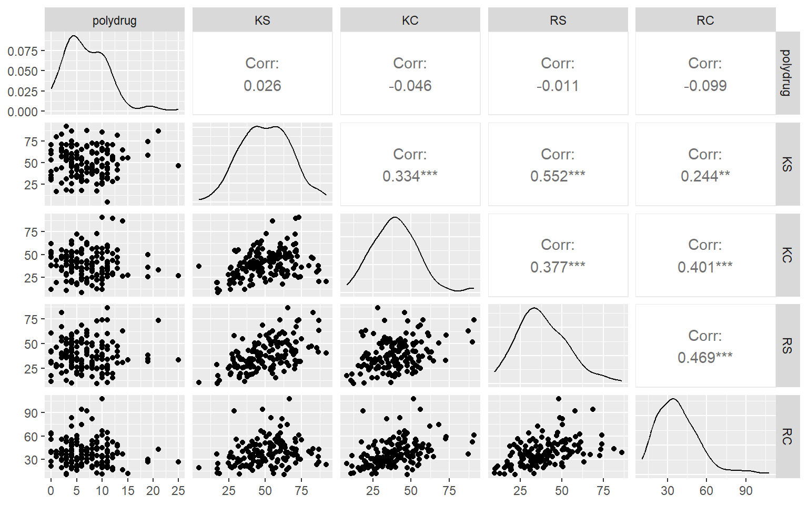
Tweaking SPLOMs
You can modify the elements of the SPLOM. Here I
- Add Loess line to the scatterplots (below diagnonal)
- Change the diagonal to histograms instead of kernel density plots
Tweaked SPLOM
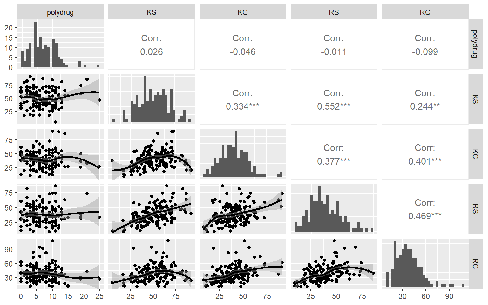
Correlation and Causation
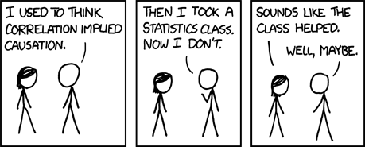
Extrapolation
A regression equation only applies to data like those used to create it
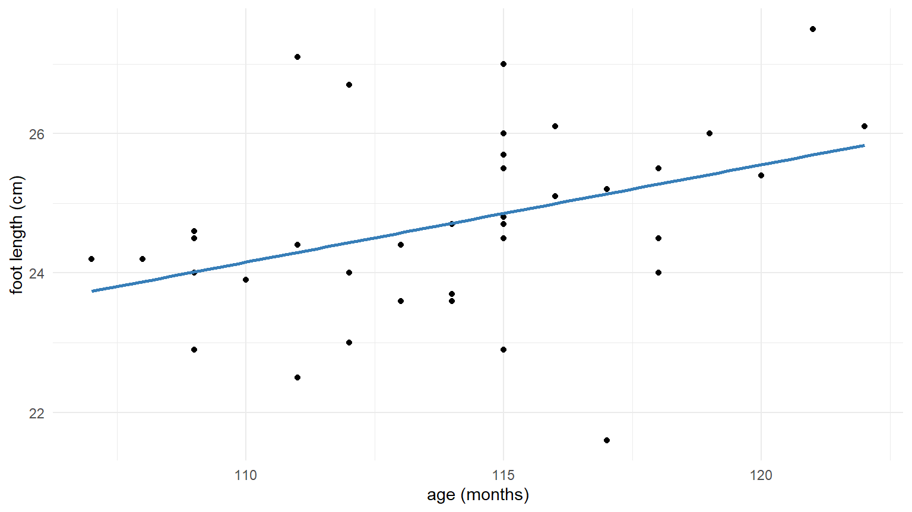
Should predictions from this regression be applied to adults? babies?
Simpson’s Paradox
Simpson’s Paradox: A statistical phenomenon in which the relationship between two variables disappears, or changes direction, after taking a third variable into account.
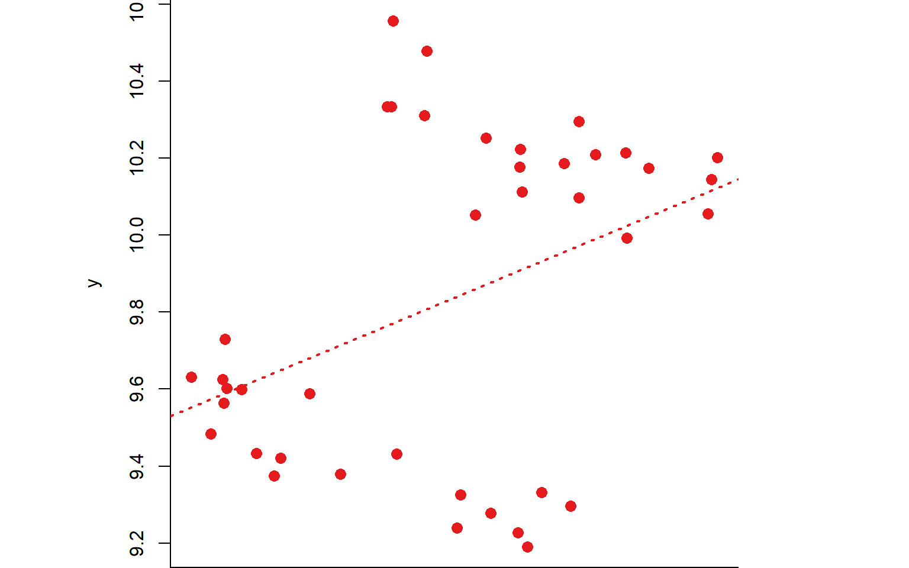
Paradox Revealed
Simpson’s Paradox: A statistical phenomenon in which the relationship between two variables disappears, or changes direction, after taking a third variable into account.
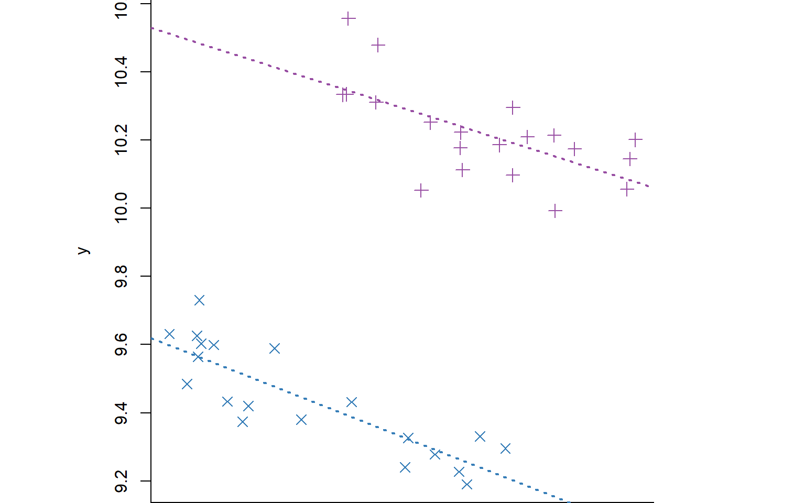
Range Restriction
Correlations can change if selecting on one variable (Taylor & Russell, 1936)
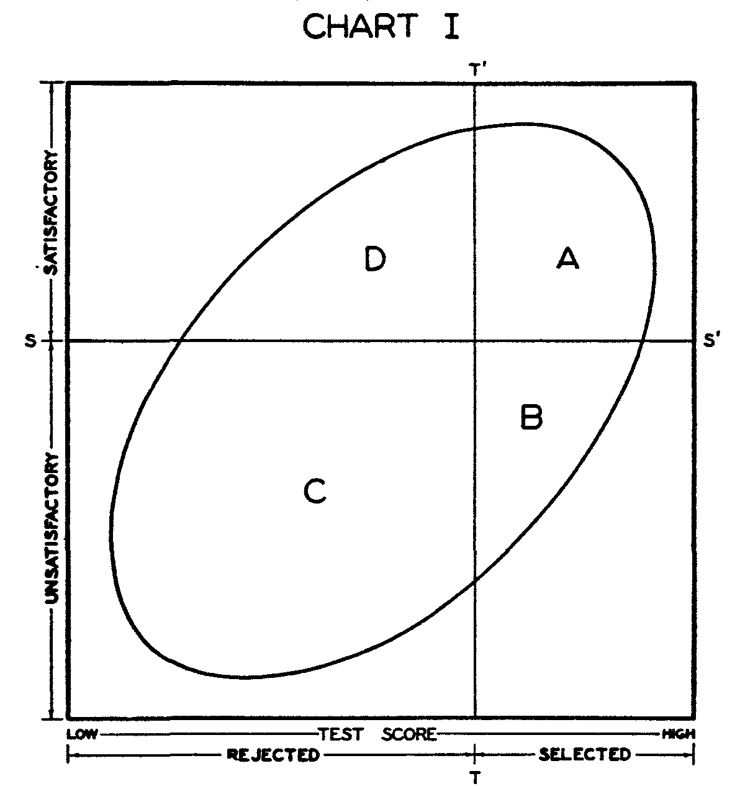
And Others!
Other factors that can affect correlations:
- Confounding third variables: can make a correlation larger, smaller than it should be, can even change signs!
- Unreliable variables: generally attenuate (reduce in magnitude) correlations
- Nonlinearity: PPMs assume a linear relationship
- Dichotomization or discretization: changing continuous variables to categorical removes information, can change correlations
- The crud factor: “soft” psychology variables tend to correlate \(\approx .3\) (Meehl, 1990)
Some References
MacCallum, R. C., Zhang, S., Preacher, K. J., & Rucker, D. D. (2002). On the practice of dichotomization of quantitative variables. Psychological Methods, 7, 19-40.
Meehl, P. E. (1990). Why summaries of research on psychological theories are often uninterpretable. Psychological Reports, 66, 195-244.
Taylor, H. C., & Russell, J. T. (1936). The relationship between validity coefficients to the practical effectiveness of tests in selection: Discussion and tables.
Many of these ideas will come up again in later lectures :)